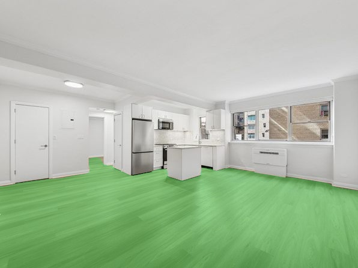
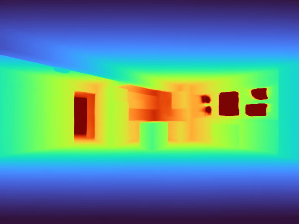
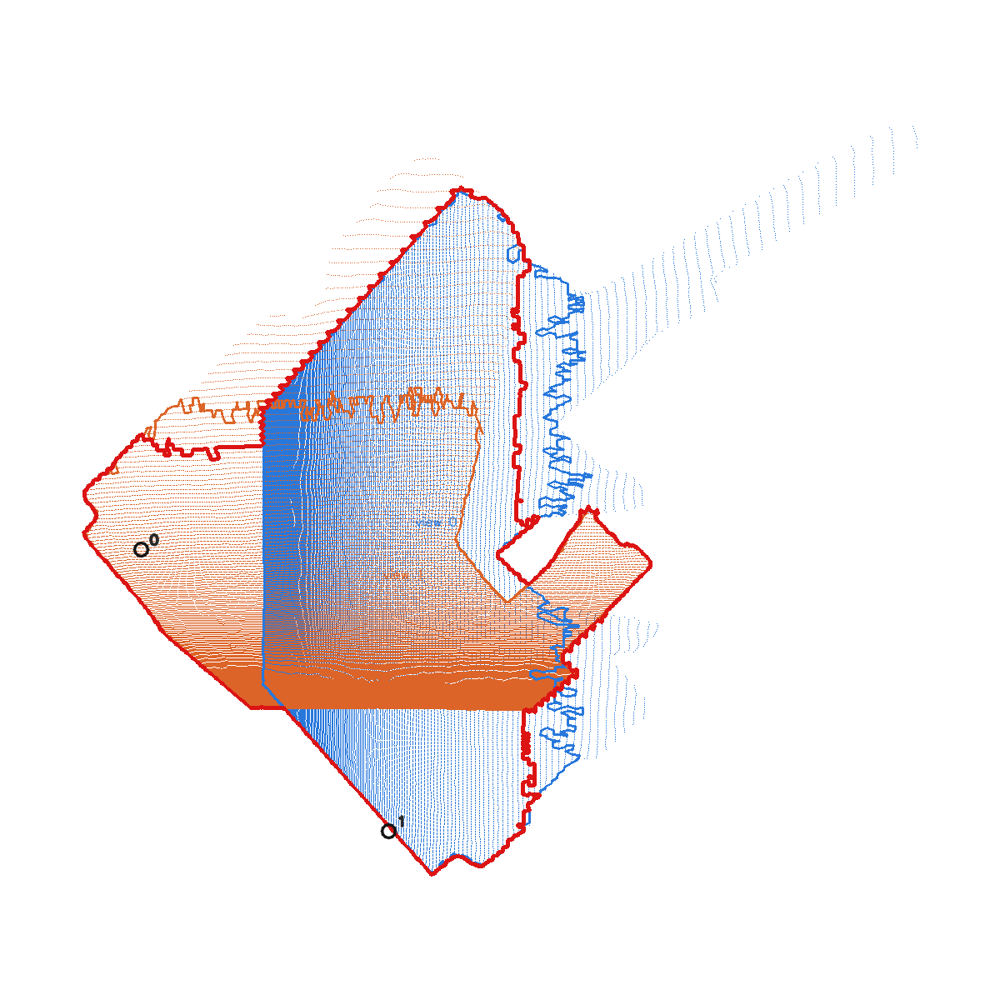

A free Chrome extension for StreetEasy · NYC
What the listing
doesn’t tell you.
How much crime actually happens on that block, and how big the rooms really are. SleepEasy adds both to every StreetEasy listing — open source, no accounts, no tracking, computed entirely on your device.
01 — Crime context
Every neighborhood, ranked honestly.
SleepEasy reads the listing’s coordinates from the page, maps them to the official NYC neighborhood by point-in-polygon, and shows murder, felony assault, and property crime — each ranked against all 197 neighborhoods. The headline measure is an ambient risk index: incidents per 100,000 people actually present, residents plus daytime workers, so business districts aren’t unfairly inflated. Prefer per-resident rates, density, or raw counts? One click.
All data ships inside the extension, compiled from NYPD complaint records on NYC Open Data. Nothing is looked up over the network — your browsing never leaves your browser.
- 197 neighborhoods ranked
- 4 ways to read the numbers
- 0 network requests
02 — Room square footage
Listings skip the square footage.
The photos can’t.
Group a listing’s photos into rooms and SleepEasy estimates each floor area with a computer-vision pipeline running on a local backend you install with one command: semantic segmentation isolates the floor, a metric-depth model recovers 3D geometry, and the floor plane is measured in real-world units. Photos are fetched and analyzed on your machine — never sent to anyone.



| Pipeline | Hardware | Error |
|---|---|---|
| Multi-photo (DUSt3R camera fusion) | NVIDIA GPU | 5.4% |
| Single-image (visible floor only) | Any machine | 19.9% |
Benchmarked against one professionally photographed room with known dimensions — treat estimates as a sanity check, not gospel. The full 23-configuration evaluation is in the research write-up.
03 — Install
Two minutes for crime stats.
A few more for room sizes.
Crime stats — no dependencies
- Download sleepeasy-extension.zip and unzip it
- Open
chrome://extensions, turn on Developer mode - Click Load unpacked and pick the unzipped
extensionfolder - Open any StreetEasy listing
Room square footage — adds the local AI backend
git clone https://github.com/umqadir/streeteasy-enhanced-extension.git
cd streeteasy-enhanced-extension/selfhost
bash scripts/install.sh # python env + ~4 GB of model weights
bash scripts/start_backend.sh # serves http://127.0.0.1:8787Requires uv. Works on any machine; an NVIDIA GPU unlocks the more accurate multi-photo mode. Full docs in selfhost/README.
04 — Privacy
Nothing leaves your machine.
No accounts. No analytics. No tracking. Crime lookups run against data
bundled in the extension; photo analysis talks only to
127.0.0.1. The entire codebase is MIT-licensed and
public,
so you don’t have to take our word for it.
Read the privacy policy.
Questions
Is this affiliated with StreetEasy?
No. SleepEasy is an independent open-source project, not affiliated with or endorsed by StreetEasy, Zillow Group, the NYPD, or the City of New York.
Where does the crime data come from?
NYPD complaint records published on NYC Open Data, joined with official neighborhood boundaries, 2020 Census population, and Census LODES workplace counts. The compilation scripts are in the repository, so every number is reproducible.
Do crime statistics really say whether I’ll be safe?
No — they describe reported incidents in an area over a window of time. Past incidence does not predict future safety, and complaint data has well-known reporting biases. SleepEasy shows context, not verdicts.
Why does the square-footage feature need a separate install?
It runs real computer-vision models (segmentation, metric depth, multi-view fusion) that can’t ship inside a browser extension. Running them locally is also what keeps the photos on your machine.